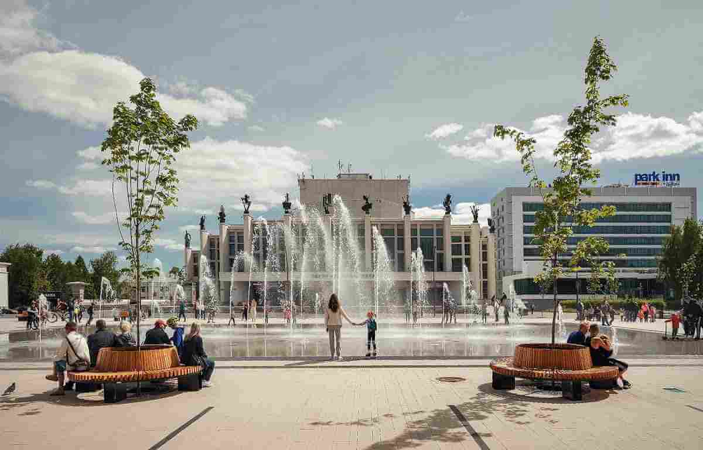
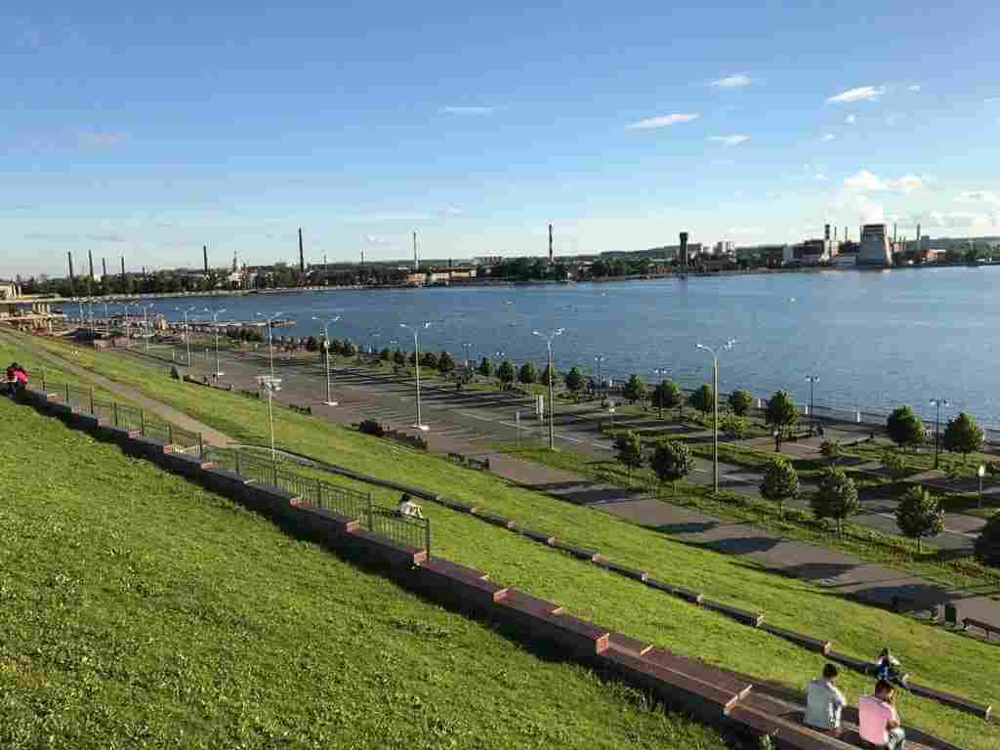
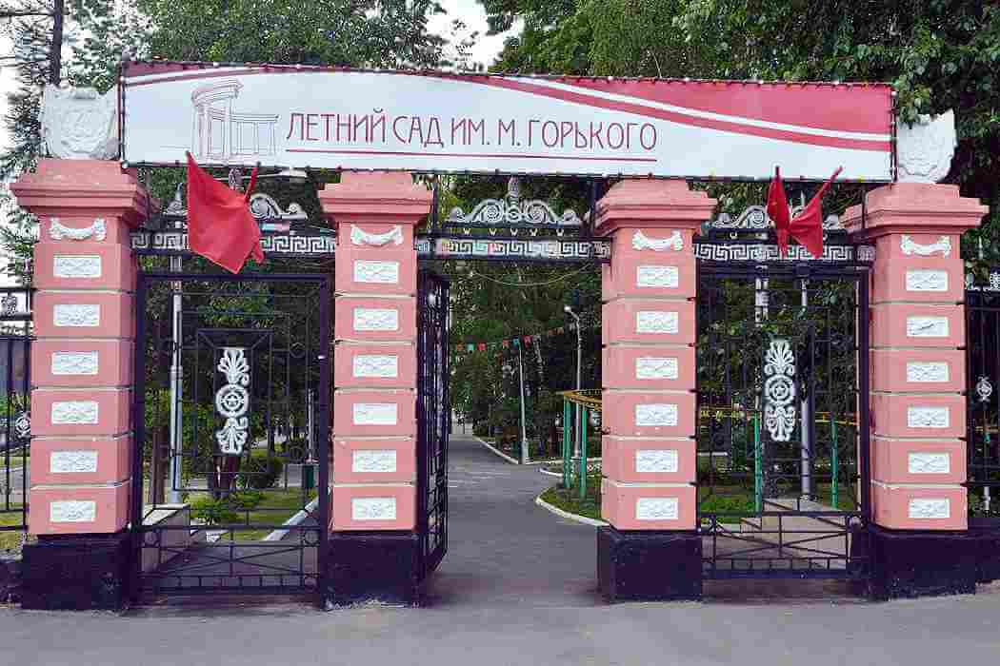

Какие достопримечательности посетить
МКПО и ВУЗЫ Удмуртии
Куда сходить погулять
Где поесть
Где остановиться
Menu
Где погулять

Центральная площадь
×

Набережная зодчего Дудина
×
Режим работы: с 9:00 до 23:00.">
Парк культуры имени С. М. Кирова
×
Режим работы: сентябрь-ноябрь, март-май: пн-вс 9.00–19.00; июнь-август: пн-вс 9.00–21.00; декабрь-февраль: пн-вс 9.00–16.00.">
Ижевский зоопарк
×
Государственный цирк Удмуртии
×
Режим работы: круглосуточно.">
Парк Оружейника Драгунова
×

Режим работы: с 10:00 до 23:00.">
Летний сад имени Горького
×
Режим работы: 10:00 до 21:00, касса завершает работу в 20:00.">
Динополис
×